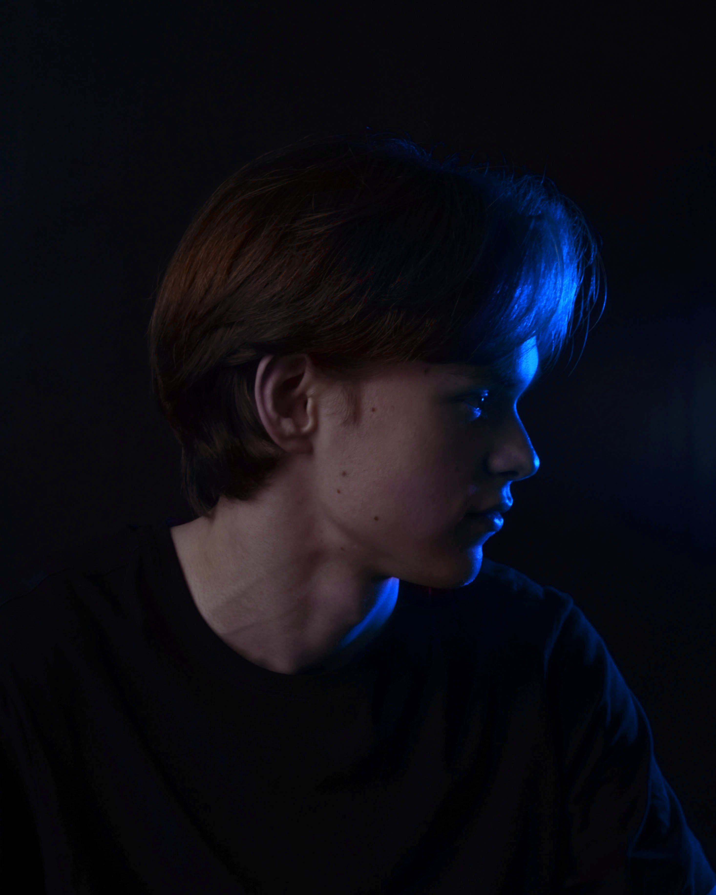
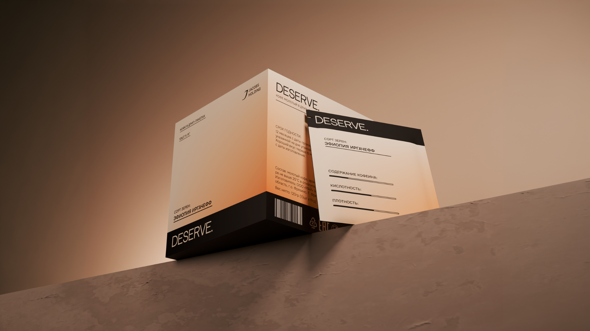
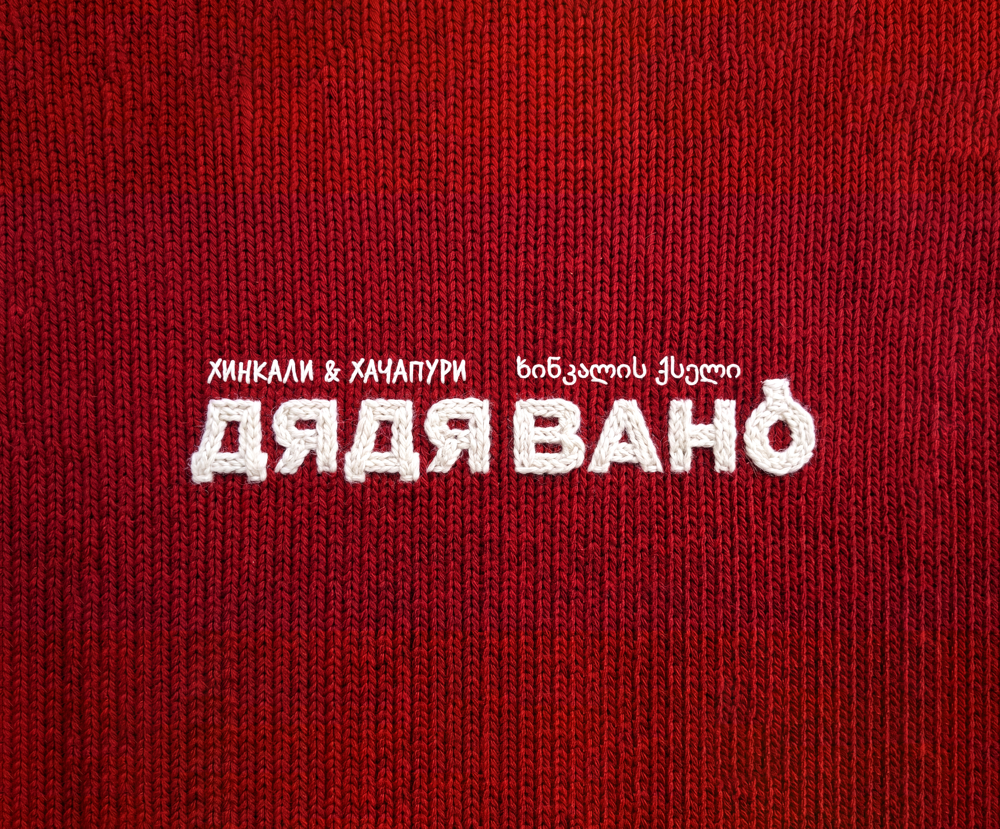

Концепт айдентики для сервиса по доставке еды. Разработал айдентику, создал визуальную систему и экраны мобильного приложения.
НИКИТА ШАЛУХИН
Айдентика, упаковка, плакаты и визуальные системы

Работаю с айдентикой, упаковкой, плакатами, афишами и вёрсткой. За время работы успел поработать с ресторанными брендами, музеем и образовательными проектами. Также участвовал в KIAN Summer School. Благодаря полученному опыту умею работать как над отдельными задачами внутри бренда, так и развивать целостные системы от концепции до финала.
Избранные работы

Концепт упаковки дрип-кофе. Серия упаковки, которая помогает различать вкусы и уровень кофеина.

Совместный проект по оформлению книги о пандемии COVID-19. Создали экспериментальную вёрстку, в которой типографика и композиция передают эмоциональное напряжение и развитие событий.
Концепт айдентики для мессенджера, объединяющего чаты и маркетплейс. Разработал визуальную систему бренда, а также рекламные материалы.
Концепт упаковки синих чипсов. Создал серию из трех разных вкусов.

Развитие существующей айдентики сети ресторанов грузинской кухни «Дядя Вано». Обновил маскота, систематизировал визуальный стиль и разработал рекламные материалы для разных форматов.